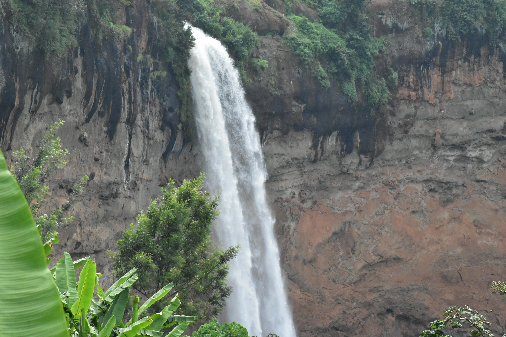

Sipi Falls feels like Uganda turning cool, green, and vertical. The roads climb, the air sharpens, and suddenly the landscape is
no longer about plains or broad lakes but about escarpments, cultivated slopes, and waterfalls dropping through improbable space.
It is a destination that rewards both movement and stillness.
Hiking here is not only about reaching a viewpoint. It is about passing through a lived-in highland landscape where farms trace the
contours of the hills and local paths connect homes, gardens, and ridges. That human texture makes the scenery feel grounded rather
than ornamental.
Then the falls appear. Each one lands differently, framed by cliffs, mist, and bright green vegetation. The result is a walk that
keeps alternating between effort, release, and the kind of scenery that makes you stop mid-sentence.
Three Falls, Three Different Moods
One of Sipi's pleasures is that the waterfalls do not feel like copies of one another. Some viewpoints emphasize height, others the
basin below, others the sheer relationship between rock, water, and cultivated hillsides. The hikes between them keep the experience
from flattening into a single postcard.
This changing rhythm is what keeps the walk engaging. You move through villages, descend to damp edges, climb back into open air,
and keep finding new angles on the same wider landscape. Sipi is scenic, but it is also wonderfully varied in texture.
Coffee, Cliffs, And Mountain Light
The slopes around Sipi are also part of Uganda's coffee country, which adds another layer to the destination. A coffee experience
here does more than fill an afternoon. It helps explain the landscape itself: why the hills are cultivated the way they are, how
people work the altitude, and why the region feels both beautiful and productive.
Light changes quickly in these highlands. Mornings can feel fresh and softly veiled, while afternoons bring clearer views stretching
out toward lower country. By evening, the escarpment often glows in a way that makes the destination feel quietly theatrical.
Why Sipi Works Beyond Hiking
Even travelers who are not chasing strenuous adventure tend to enjoy Sipi because the experience is flexible. You can hike deeply,
choose shorter walks, linger at a lodge with a dramatic view, or combine scenery with local coffee and slower conversations. The
destination never insists on one pace.
That adaptability is part of its magic. Sipi can be an active break, a scenic retreat, or a welcome contrast after more wildlife-
focused days elsewhere in Uganda.
What Makes It Feel Magical
The word "magical" is often overused in travel writing, but Sipi earns it through atmosphere rather than exaggeration. The water,
the cool air, the cultivated hills, and the shifting cloud all combine into a place that feels lighter and more lyrical than many
of Uganda's headline safari landscapes.
For travelers who want beauty they can walk through rather than only photograph from afar, Sipi Falls offers one of the country's
most refreshing and memorable escapes.